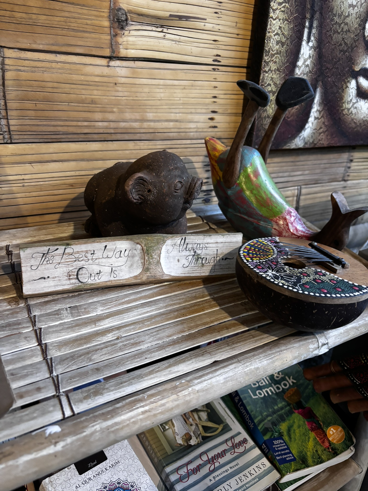
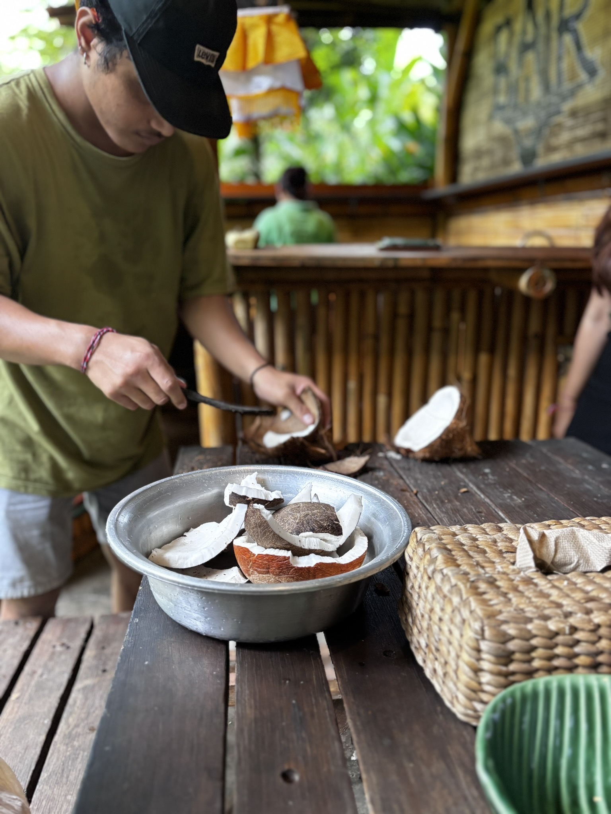
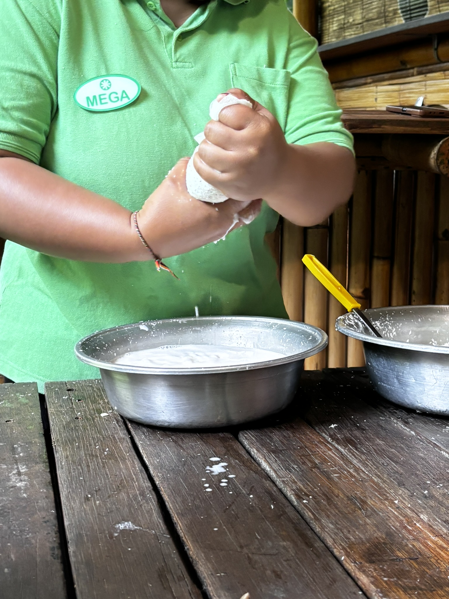
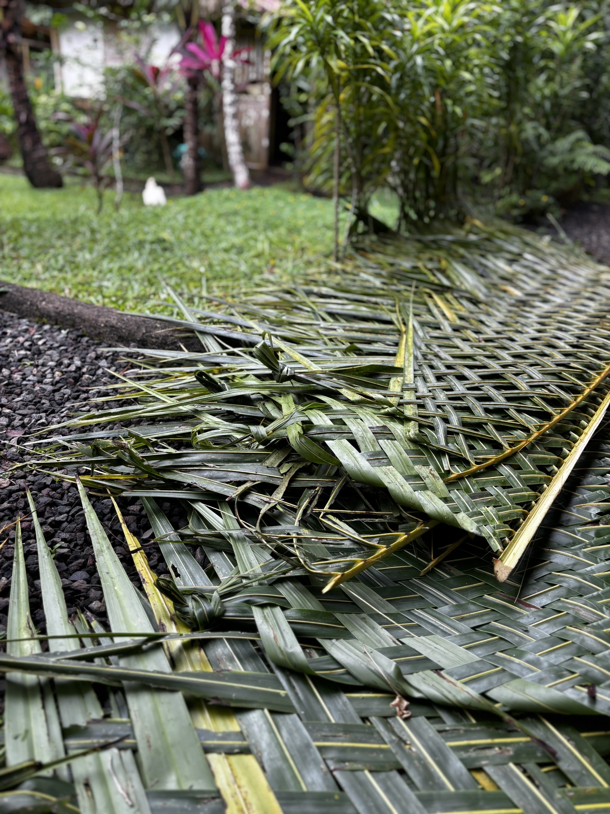
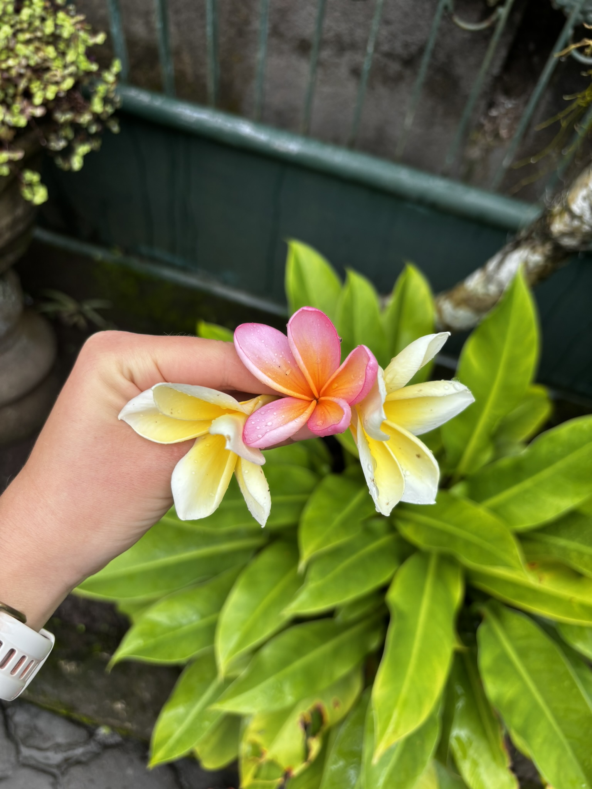

I found the quote in a gift shop in Ubud, carved into a wooden plank between a small stone frog and a painted duck. It said: The best way out is always through. Robert Frost. It was sitting on a shelf next to a Bali & Lombok guidebook and a hand-painted ceremonial mask, and it had the slightly accidental quality of things that are exactly right.

"The best way out is always through." Ubud, on a shelf, between a frog and a duck. The universe communicates in mixed media.
I had signed up for a traditional crafts workshop that morning — the kind of thing that sounds slightly tourist-adjacent until you're actually in the middle of it, elbow-deep in coconut, and it turns out to be the most present you've felt in weeks. The workshop was at a small eco-village outside Ubud, run by people who had been doing these things their whole lives and were patient about explaining them to a Romanian woman who kept asking follow-up questions.
The coconut
Everything in Bali involves coconut in some way. This is not an exaggeration — it appears in the offerings, the cooking, the construction, the skincare, the ceremonial objects, and the cocktails. Understanding where it comes from and how it becomes what it becomes is, I think, basic Bali literacy.

Breaking down the coconut — methodical, practiced, no wasted movement. The bamboo walls and the sound of the jungle outside made it feel like a very different world from wherever you flew in from.
We started by cracking and scraping. The coconut shell goes first — opened with a single practised blow — and then the white flesh is separated from the brown husk and scraped into a bowl. The technique is quick and exact when the person doing it knows what they're doing. It was slower and more approximate when I tried it. This is fine. This is the point.

Mega, extracting coconut milk the traditional way — handfuls of grated flesh, squeezed over a bowl until the milk runs out. It takes longer than a machine. It feels like it matters more.
The next step is the part you don't see in a supermarket: you take the grated coconut in your hands and you squeeze. Hard, repeatedly, turning the mass in your palms until the milk runs out into the bowl below. It is unglamorous and entirely satisfying. Mega — the workshop instructor — had the technique of someone who had done it ten thousand times: efficient, unhurried, completely focused. I had the technique of someone doing it for the first time. We both ended up with coconut milk in the bowl. The process arrived at the same destination through different competencies.
The banana leaf fence
The second part of the workshop was weaving. Specifically: weaving panels from banana leaves, the traditional Balinese method used for fencing, ceremonial structures, and temporary enclosures. The finished panels are lashed together and last a season before they go back into the earth. The process of making one takes considerably longer than it looks like it should.

The banana leaf panel, mid-assembly. The weave is tighter and more precise than it looks. The leaves are pliable when fresh and become rigid as they dry, which is the whole point.
You split the banana leaves into strips and weave them over and under, tightening as you go, working from one edge to the other in a rhythm that — once you find it — is genuinely meditative. There is something about the repetition, the smell of the green leaves, the sound of the garden around you, that makes time move differently. I am not usually a person who says things like that. I am saying it now because it was true.
The finished panel is dense and flat and smells of something clean and tropical. It will eventually compost back into the same garden it grew in. Nothing is wasted. This is also a thing Bali is good at communicating if you spend enough time paying attention to the small versions of it.
The flowers
At the end of the morning, walking back through the resort garden, I stopped for the frangipani. You stop for frangipani in Bali the same way you stop for sunsets — not because you decide to, but because your feet slow down on their own and your hand comes up with the phone before you've consciously agreed to photograph anything.

Frangipani. You will photograph these. There is no version of visiting Bali where you don't photograph the frangipani. Accept it early and carry on.
The white and yellow one is the classic. The pink one is the one that makes you look twice. Together they are the version of Bali that gets described as spiritual by people who aren't sure what they mean by that but feel something anyway. I felt something. I'm not entirely sure what to call it either. Something about slowness, about making things with your hands, about how much knowledge is stored in the bodies of people who learned it from their grandparents and have no reason to forget it.
The quote on the shelf in the gift shop was for a book about grief or resilience or some other large subject. In context — between the stone frog and the painted duck, in a shop in Ubud, after a morning of coconut and banana leaf — it meant something smaller and more useful: the way you understand a place is by going through it, not around it. The workshop. The squeezing. The weaving. The walking back through the garden.
That's the way through. It usually is.